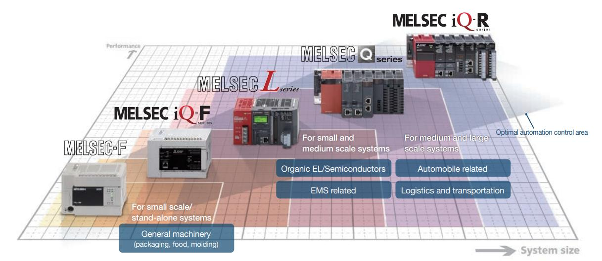
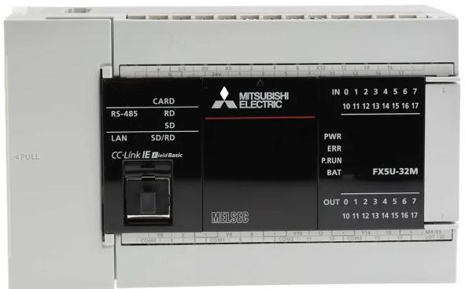
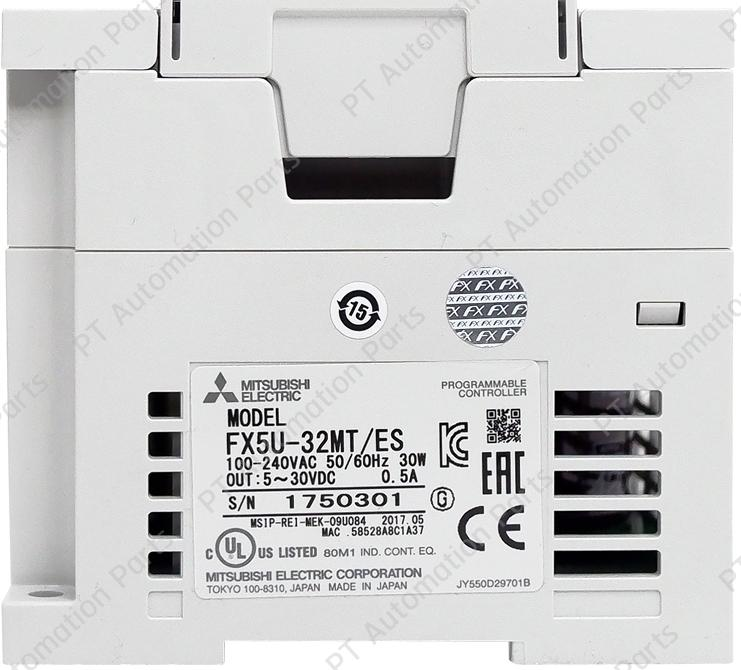
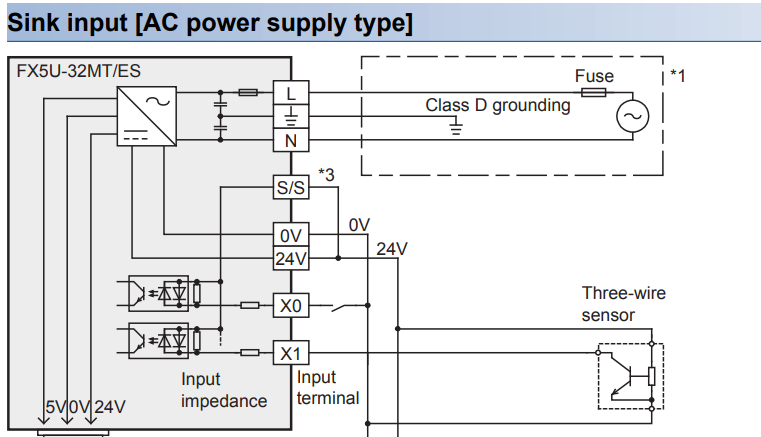
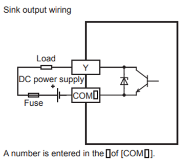

รู้จัก PLC Mitsubishi FX5U
ก่อนจะเขียนโปรแกรมได้ ต้องเข้าใจว่า PLC คืออะไร ทำงานยังไง แล้ว FX5U-32MT/ES ที่เราจะใช้ตลอดคู่มือนี้ มีอะไรอยู่ในตัวบ้าง — บทนี้พาดูตั้งแต่ระดับ Concept จนถึงรายละเอียดของรหัสรุ่น
PLC คืออะไร
Programmable Logic Controller (PLC) คือคอมพิวเตอร์เฉพาะทางที่ออกแบบมาให้ทนต่อสภาพแวดล้อมในโรงงาน อ่านสัญญาณจาก เซ็นเซอร์ และ สวิตช์ เข้ามาประมวลผลตาม Logic ที่เราเขียน แล้วสั่งงาน actuator เช่น มอเตอร์ โซลินอยด์ ฮีตเตอร์ ออกไปอีกฝั่ง
Input (X)
สัญญาณเข้า
- Limit Switch
- Push Button
- Sensor
- Encoder
- Analog (4–20 mA)
CPU + Program
ประมวลผล
- อ่าน Input ทุกตัว
- ประมวลผล Ladder บน→ล่าง
- เขียน Output ทุกตัวพร้อมกัน
Output (Y)
สั่งงานออก
- Motor / Relay
- Solenoid
- Indicator
- Heater
- Valve
หัวใจของ PLC คือมัน scan ทำซ้ำ ตลอดเวลา — ทุกรอบจะ (1) อ่าน Input ทุกตัวพร้อมกัน (2) ประมวลผลโปรแกรมจากบนลงล่าง (3) เขียนค่า Output ทั้งหมดออกพร้อมกัน Concept นี้เรียกว่า Scan Cycle เป็นสิ่งที่ต้องเข้าใจก่อนเขียนโปรแกรม
ตระกูล MELSEC iQ-F และตำแหน่งของ FX5U
Mitsubishi แบ่งกลุ่ม PLC ของตัวเองเป็น iQ-R (large), iQ-F (compact), และซีรีส์เก่าอย่าง Q Series — ตัว FX5U อยู่ในกลุ่ม iQ-F แทนที่ FX3U/FX3G/FX3S เดิม และใช้ GX Works3 (ไม่ใช่ GX Works2 ที่ใช้กับ FX3U)

| รุ่น | กลุ่ม | IDE | หมายเหตุ |
|---|---|---|---|
FX1N / FX2N | Legacy | GX Developer | เก่าแล้ว ไม่แนะนำของใหม่ |
FX3S / FX3G / FX3U | FX Gen-3 | GX Works2 | ยังเจอในโรงงานเยอะ |
FX5U / FX5UC / FX5UJ | MELSEC iQ-F | GX Works3 | รุ่นที่เราใช้ในคู่มือนี้ |
Q Series / iQ-R | High-end | GX Works2/3 | สำหรับงานใหญ่ระดับโรงงานทั้งสาย |
FX5U-32MT/ES — รุ่นที่เราใช้


FX5U-32MT/ES · 100-240VAC 50/60Hz 30W · OUT 5~30VDC 0.5Aมาแกะรหัสรุ่นกัน — FX5U-32MT/ES หมายความว่า:
💡 ลองคลิกที่แต่ละส่วนของรหัสรุ่น (เช่น T หรือ /ES) เพื่อดูตัวเลือกอื่น ๆ และเปรียบเทียบความแตกต่าง
คุณสมบัติสำคัญที่ติดมากับตัว
การจ่ายไฟและการต่อ I/O
การจ่ายไฟเข้า PLC
FX5U-32MT/ES รับไฟ AC 100–240V ที่ขั้ว L / N
และจ่ายไฟ DC 24V ออกที่ขั้ว 24V / 0V สำหรับเลี้ยง Sensor และ Input ของ PLC เอง
การต่อ Input — Sink vs Source
ขั้ว Input ของ FX5U-32MT/ES รองรับการต่อแบบ Sink (S = ตัวอักษรสุดท้ายของรหัสรุ่น) ซึ่งหมายความว่ากระแสจะไหล จาก Sensor เข้าหา PLC เมื่อ Sensor ทำงาน


สำหรับ Sensor แบบ NPN (เช่น LJ18A3-8-Z/BX) จะเข้าได้ตรงเลย — รายละเอียดอยู่ใน M03 — เซ็นเซอร์ & I/O
ก่อนไปบทถัดไป — เช็คความเข้าใจ
- แยก FX5U ออกจาก FX3U ได้ เข้าใจว่า FX5U เป็น iQ-F และใช้ GX Works3 ส่วน FX3U เก่ากว่าและใช้ GX Works2
- อ่านรหัสรุ่นเป็น FX5U-32MT/ES = 32 I/O · Output Transistor · ไฟ AC · Input Sink
- เข้าใจ Scan Cycle Input → Program → Output ทำซ้ำในเวลา 1–10 ms — ไม่ใช่ทำงานแบบ Sequential เหมือนโปรแกรม PC
- รู้ว่าไฟเข้าอยู่ที่ขั้วไหน L/N รับ AC 100–240V — ห้ามต่อ AC เข้า X input!